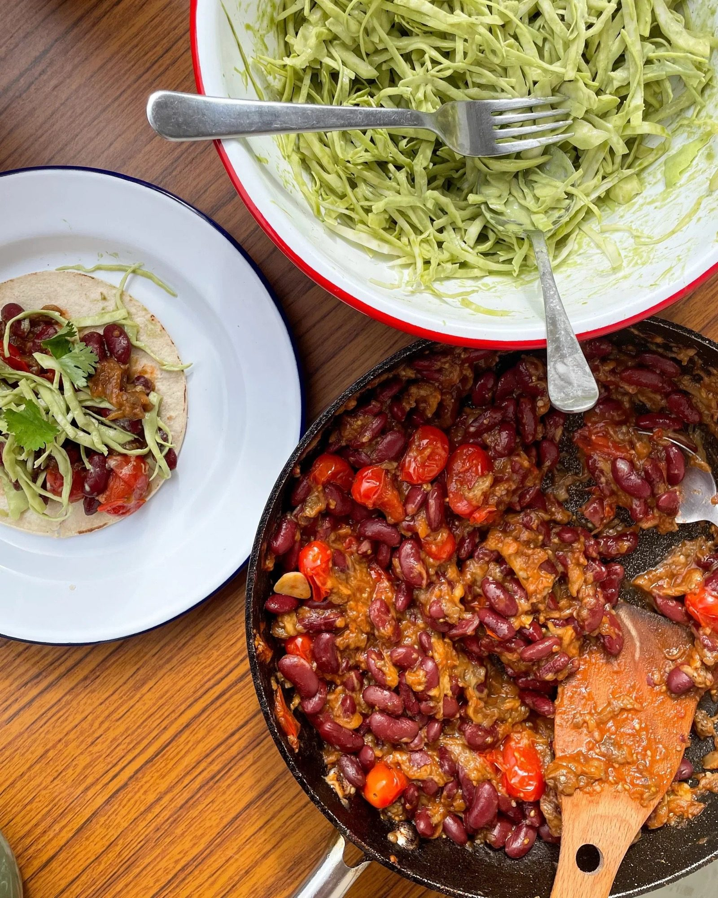

Smoky Aubergine + Red Kidney Bean Tacos with Crunchy Tahini Slaw
Charred aubergine shredded into blistered tomatoes, smoked paprika and red kidney beans, piled into tortillas with a tahini-dressed cabbage slaw.

Before you start heat the grill to high.
Ingredients
Tahini dressed slaw
To serve
Method
Stops your screen dimming and locking while your hands are busy. It switches off when you leave this page.
- Put the 3 aubergines directly under a hot grill.
- Cook, turning regularly, for 10 minutes until totally blackened and collapsing.
- Set the aubergines aside to cool slightly.
- Heat the 1 tbsp olive oil in a non-stick frying pan over a high heat.
- Add the 250g cherry plum tomatoes and cook for 5-6 minutes, until blistered, soft and slightly charred.
- Lower the heat, add the 1 garlic clove and fry for 1-2 minutes until fragrant.
- Stir through the 1 tbsp tomato purée and 2 heaped tsp smoked paprika, trying not to break up the tomatoes too much.
- Set aside a few coriander leaves from the 25g soft herbs for garnish.
- Put the remaining soft herbs, the 1 tbsp Greek yoghurt, 3 tbsp tahini, juice of ½ lime, 1 small grated garlic clove and 2 tbsp jalapeños into a small bowl with 1 tbsp of water and mix well to combine.
- Add more water to loosen the dressing, if necessary.
- Dress the ½ white cabbage with the tahini dressing and a pinch of salt.
- Once the aubergines are cool enough to handle, peel away the skin and shred the flesh with a fork.
- Mash the flesh into smaller pieces.
- Stir the aubergine into the tomato mixture.
- Add the 700g jar of red kidney beans and season with a good pinch of salt.
- Heat a griddle pan over a medium-high heat and quickly griddle the 6-10 small soft tortillas until lightly charred.
- Spoon the aubergine and bean mixture onto the tortillas.
- Top with the crunchy tahini slaw, then finish with the reserved coriander leaves and a drizzle of pomegranate molasses, if you like.
Notes
- Griddling the tortillas is optional, but it adds a great charred flavour. You can also do it over a naked flame.
- Use a vegan yoghurt in the slaw to make it vegan.
- The source lists the beans as drained but its method calls for them "with their liquid" — draining keeps the filling thick enough for tacos.